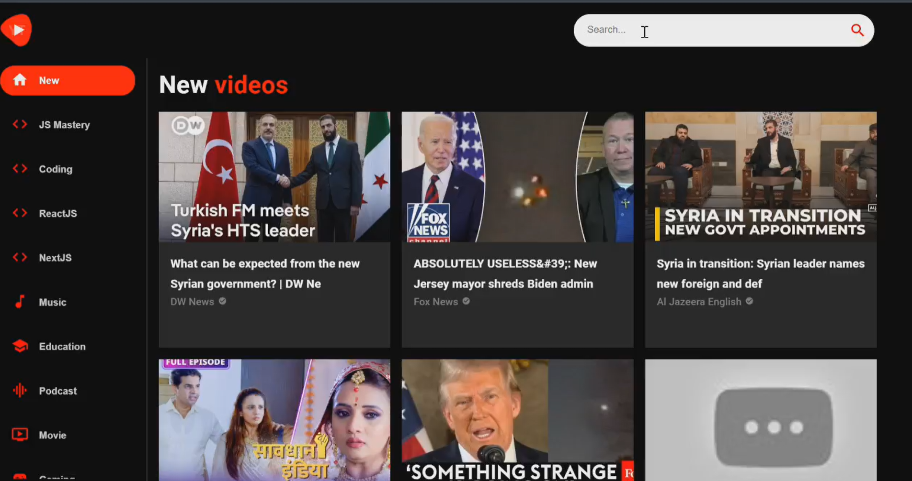

Let's Introduce About Myself
I am Bhargav Chollangi, a skilled Data DevOps Engineer and Azure Cloud Engineer with expertise in deploying and managing resources in the Azure cloud environment. I specialize in implementing Infrastructure as Code (IaC) using ARM templates and Bicep, ensuring scalable, secure, and efficient cloud solutions. My experience includes deploying and managing key resources such as Virtual Machines (VMs), Databricks, Virtual Networks (VNet), Private Endpoints, Function Apps, SQL Databases, Cosmos DB, and Key Vaults. I also excel in building, testing, releasing, deploying, and monitoring CI/CD pipelines, leveraging tools like Grafana for tracking and optimizing DevOps workflows. I bring ideas to life in the digital realm.
What We Do
As a Full Stack DevOps Engineer, I specialize in automating infrastructure, managing cloud environments, and optimizing CI/CD pipelines. With expertise in Cloud Engineering, I deploy scalable solutions on platforms like Azure and AWS. I leverage Machine Learning to build intelligent applications, enhancing data-driven decision-making. As an API Developer, I design and implement robust APIs for seamless integration. Additionally, I have strong skills in Front-end Development, creating user-friendly, responsive web applications with modern frameworks.
Full Stack DevOps Engineer:
As a Full Stack DevOps Engineer, I bridge the gap between software development and IT operations. I automate and manage CI/CD pipelines, ensuring seamless integration and continuous delivery of applications. I focus on infrastructure automation using tools like Bicep and Terraform, deploying resources to cloud platforms like Azure. My role also involves monitoring and optimizing application performance to ensure efficient, scalable deployments. I work closely with both development and operations teams to maintain a smooth workflow.
Cloud Engineer
As a Cloud Engineer, I design, deploy, and manage cloud infrastructure, primarily on Azure. I ensure the optimal configuration and deployment of cloud resources like VMs, Databases, and Key Vaults. I also handle the migration of on-premise applications to the cloud and manage networking, security, and monitoring. I utilize Infrastructure as Code to automate provisioning and scaling. My work ensures that cloud-based systems are highly available, cost-effective, and secure.
Machine Learning Engineer
As a Machine Learning Engineer, I develop and deploy machine learning models to solve real-world problems. I work with large datasets, clean and process data, and build predictive models using Python and libraries like TensorFlow and scikit-learn. My focus is on optimizing the performance and efficiency of models for scalability. I also integrate these models into production environments, enabling automated decision-making. I collaborate with data engineers and developers to ensure the models meet business requirements.
Front-End Developer
As a Front-end Developer, I create engaging and responsive user interfaces for web applications. I work with HTML, CSS, and JavaScript to build dynamic, user-friendly designs that run seamlessly across devices. I focus on enhancing the user experience by implementing modern design practices and optimizing performance. My role includes working with frameworks like React and Vue.js to build modular components. I collaborate with back-end developers to integrate APIs and ensure smooth communication between the front-end and back-end systems.
My Qualifications
Bachelor's Degree in Computer Science (Bac + 4), specializing in software development and systems engineering. M'sc Master's Degree in International Business (Bac+5) from Paris School of Business, France, combining technical expertise with business strategy. Proficient in Cloud Platforms, with a focus on Microsoft Azure and deploying resources using Bicep and ARM Templates. Strong experience in DevOps Practices, including CI/CD, automation, and Infrastructure as Code (IaC). Skilled in Machine Learning technologies Proficient in front-end technologies like HTML, CSS, JavaScript, and frameworks such as React/Vue.js. Familiar with database management systems including SQL, Cosmos DB, and NoSQL. Experience in monitoring tools such as Grafana, Azure Monitor, and Application Insights for performance tracking.
Bachelor's Degree in Computer Science
Completed a Bachelor of Engineering in Computer Science, focusing on software development, data structures, algorithms, and computer systems. Gained foundational knowledge in programming languages, software engineering practices, and problem-solving techniques.
Master of Science in International Business
I completed a Master of Science in International Business at Paris School of Business, France, where I developed a deep understanding of global business strategies, finance, and management. This program enriched my technical skills by combining business acumen with advanced problem-solving techniques in a dynamic international environment.
Computer Science and Artificial Intelligence
ML is a subset of AI that focuses on enabling machines to learn from data and improve their performance over time without being explicitly programmed. It involves training algorithms on datasets to identify patterns, make predictions, or automate processes.
Internship
Data DevOps Engineer
I bridge the gap between software development and IT operations. I automate and manage CI/CD pipelines, ensuring seamless integration and continuous delivery of applications. I focus on infrastructure automation using tools like Bicep , deploying resources to cloud platforms like Azure. My role also involves monitoring and optimizing application performance to ensure efficient, scalable deployments. I work closely with both development and operations teams to maintain a smooth workflow.
System Engineer
designs, implements, and maintains IT systems and infrastructure to ensure reliability, scalability, and efficiency. They handle system architecture, monitor performance, and troubleshoot issues while integrating hardware, software, and networks. Their role ensures seamless system operations, meeting organizational needs and goals.
Network Engineer and System Engineer
Network Engineer designs, configures, and maintains network systems, including LAN, WAN, and cloud networks. They ensure secure and efficient data communication by managing firewalls, routers, and switches. Their role emphasizes network reliability, performance, and security.
My Projects
Deployed a YouTube Clone on Azure! Thrilled to share that I successfully deployed a fully functional YouTube clone into an Azure Resource Group! The codebase was forked from a well-structured repository, and I customized it to leverage Azure's robust cloud capabilities.
Technical Highlights: Cloud Deployment: - Hosted the application using Azure App Services, ensuring scalability and high availability. Storage Integration: - Configured Azure Blob Storage for efficient media handling. Database Management: - Deployed an Azure SQL Database for structured and reliable data storage. Networking: - Utilized Azure Application Gateway for secure and optimized traffic distribution. CI/CD Pipeline: - Implemented a streamlined deployment process via GitHub Actions, enabling seamless code updates. This project was a great opportunity to dive deeper into Azure's ecosystem while working with modern web technologies. It's exciting to see everything come together in a cloud-native environment! - Check out the live app here: URL link is unpunished Currently (https://lnkd.in/etR47W6g) - Feel free to connect if you'd like to discuss cloud deployment strategies or full-stack development! 